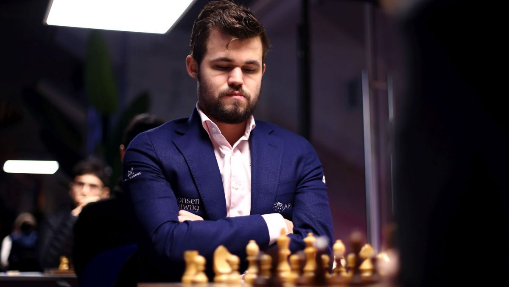
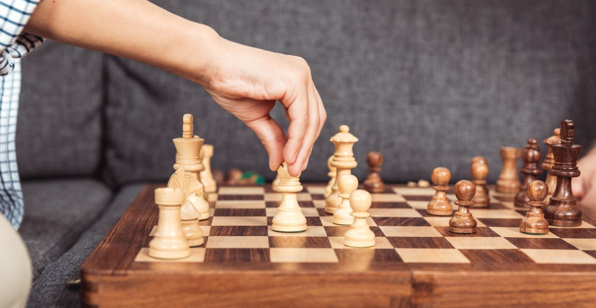
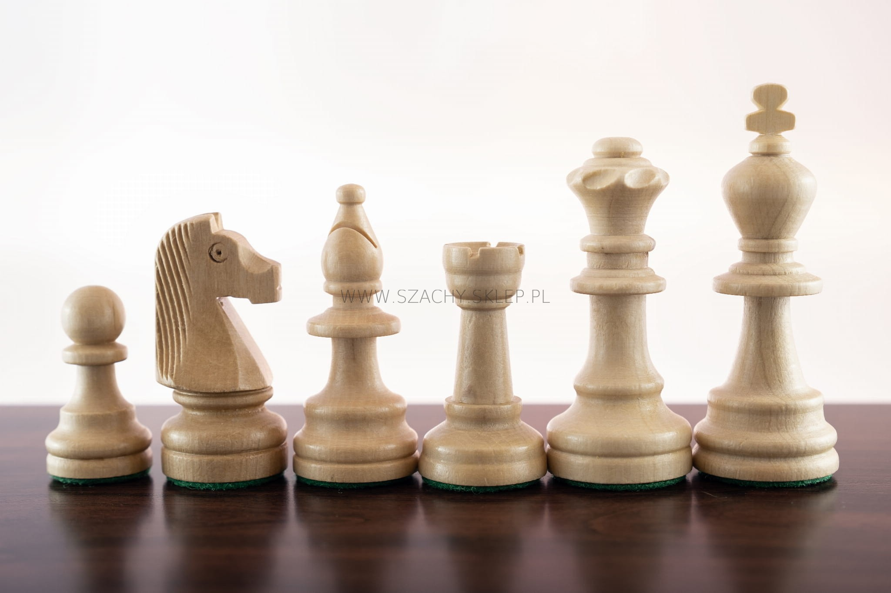
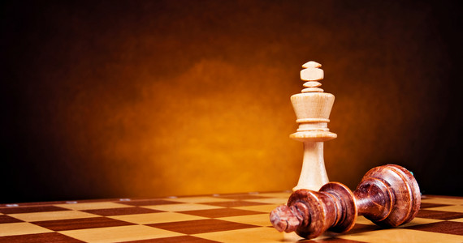

Magnus Carlsen
Magnus Carslen
norweski szachista, arcymistrz od 2004. Aktualny mistrz świata w szachach. W latach 2009–2010 Magnus Carlsen współpracował z byłym wieloletnim mistrzem świata, Garrim Kasparowem, który karierę zakończył w 2005 roku. W 2012 r. Kasparow wyraził opinię, iż jego zdaniem Carlsen mógłby stosunkowo szybko osiągnąć poziom 2900 punktów rankingowych, gdyby tylko „zaczął pracować na poważnie”.
W 2013 r. został wybrany do corocznego zestawienia tygodnika „Time”, obejmującego 100 najbardziej wpływowych ludzi na świecie, w kategorii Tytani. W 2013 został norweskim sportowcem roku oraz otrzymał tytuł Osobowości Roku 2013 w Norwegii.

Fajne zdjęcia szachów


